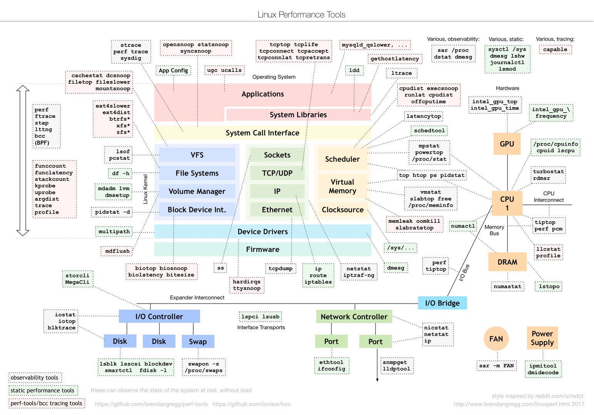
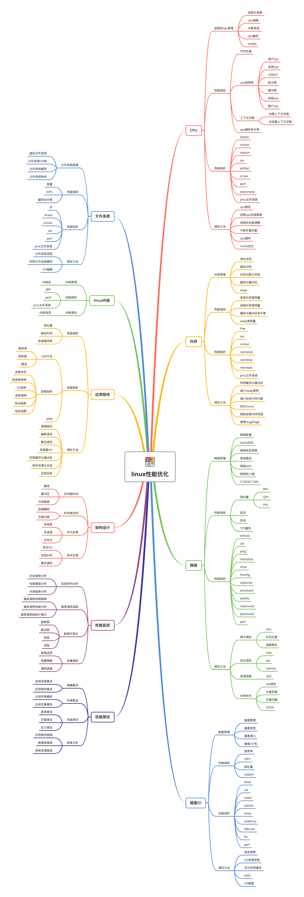

前凑
搭建github.io博客
学习
- 不需要了解每个组件的所有实现细节
- 理解他们最基本的工作原理和协助方式
性能指标
应用负载的两个指标：
- 吞吐
- 延时
性能分析：找出应用或系统的瓶颈，并想法去避免或缓解他们，从而更高效利用系统资源处理更多的请求。
性能分析六步法：
- 选择指标评估应用系统程序与系统的的性能
- 为应用程序和系统设置性能目标
- 进行性能基准测试
- 性能分析定位瓶颈
- 优化应用程序和系统
- 性能监控和告警
专栏核心：性能分析和优化
编程基础：
- 了解linux常用命令的使用方法
- 知道怎么安装和管理软件包
- 知道怎么通过编程语言开发应用程序
学习重点
建立整体系统性能的全局观是核心
- 理解最基本的几个系统知识原理
- 掌握必要的性能工具
- 通过实际的场景演练，贯穿不同的组件
性能领域大师布伦丹.格雷特(Brendan Gregg)，是动态追踪工具DTrace的作者
linux性能工具图谱：

根据此图，可选择对应的性能分析工具
性能分析思维导图

性能问题的本质是什么？
系统资源已经达到瓶颈，但请求的处理却还不够快，无法支撑更多的请求。
线程与进程的关系
线程是调度的基本单位，而进程是资源拥有的基本单位。 内核中的任务调度，实际上的调度对象是线程，而进程只是给线程提供了虚拟内存、全局变量等资源。
- 当进程只有一个线程时，可以认为进程就等于线程
- 当进程拥有多个线程时，这些线程会共享相同的虚拟内存和全局变量，这些资源在线程上下文切换时是不需要修改的
- 线程也有自己的私有数据，比如栈和寄存器，这些在上下文切换时也是需要保存的